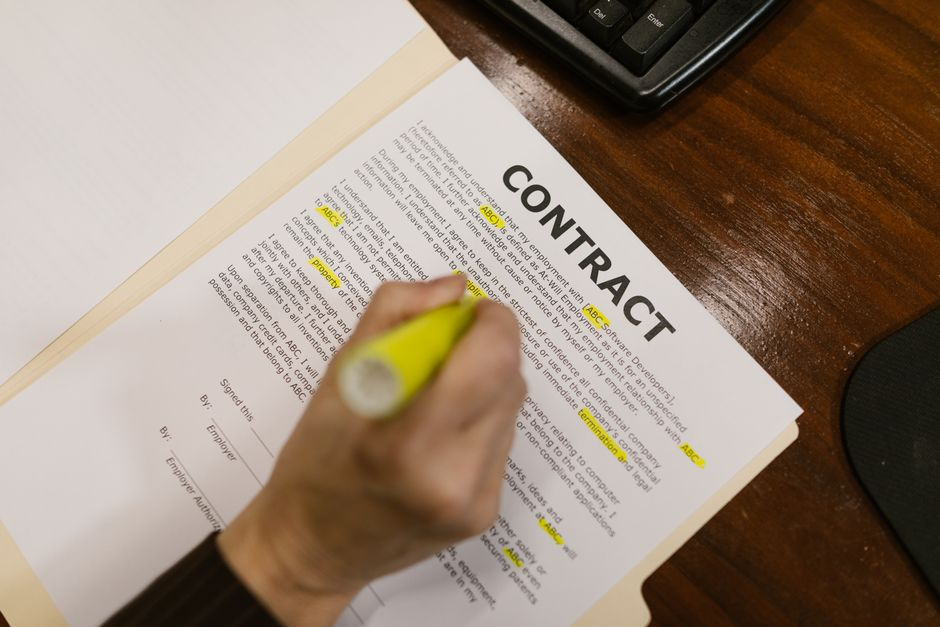

Few-Shot Prompts: How Many Examples Is Too Many
More demonstrations are not always better. Here is how to think about the trade-off between context, cost, and generalisation.

Why the count of examples is a real design decision
Few-shot prompting works because a language model conditions its next output on everything in the context window, including the examples you show it before the actual query. Give it three worked examples of turning a messy sentence into a structured record, and it tends to follow that pattern for the fourth. This feels like free performance: no fine-tuning, no labelled training run, just a handful of demonstrations pasted above the real input. The natural instinct is that if two examples help, six should help more, and twelve should help more still.
That instinct is wrong often enough that it deserves scrutiny. The number of few-shot examples is not a knob you turn up for safety. It interacts with the length of the context, the diversity of the examples, the model's own tendency to imitate surface patterns rather than underlying logic, and the cost of every single call you make. Treating it as a free lunch is exactly the kind of assumption that, if you actually evaluate it properly on held-out data, tends to fall apart.
I want to work through a concrete case to show where the returns diminish and where they can reverse, and then give a practical way to decide the count instead of guessing.
A worked example: classifying customer complaints
Imagine a task: classify short customer messages into one of five categories, such as billing, delivery, product fault, account access, and other. You have a pool of labelled examples and you want to build a few-shot prompt for a model that has not been fine-tuned on this task.
With zero examples, the model relies purely on the category names and whatever it has absorbed about what those words typically mean. Accuracy on a held-out test set might sit around 62 percent, reasonable but shaky on ambiguous cases like a message that mentions both a late delivery and a wrong charge.
Add two well-chosen examples, one per contrasting category, and accuracy might jump to 74 percent. The model now has a template for the expected format and a sense of the boundary between neighbouring categories. Add two more, covering categories it previously confused, and it might climb to 80 percent. This is the phase where every extra example is doing real work: filling a gap in coverage, disambiguating a genuinely confusing pair of labels.
Push on to ten examples and the picture usually flattens. Accuracy might sit at 81 percent, barely above the four-example version, because the marginal examples are increasingly similar to ones already shown. Push to twenty and something more troubling can happen: accuracy drops to 78 percent. Why would more correct, relevant examples make things worse? A few mechanisms are usually at play. The model may start pattern-matching on surface features of the examples, such as message length or a particular phrase that happened to repeat, rather than the actual decision rule. Order effects creep in, where labels appearing later in a long list get less attention than the first and last few, a well-documented property of how these models weight context. And if your twenty examples are not perfectly balanced across categories, the model can pick up an implicit frequency bias that skews predictions towards whichever label appeared most.
The practical lesson from this shape is that there is usually a small window, often somewhere between two and eight examples for a moderately complex classification task, where each addition earns its keep, followed by a plateau, followed by a real risk of degradation if you keep stacking examples without curating them.

What actually drives the optimal count
Task complexity is the first lever. A binary sentiment task with a clear boundary might only need one example per class to establish format, because the underlying rule is simple. A five-way classification with overlapping categories, or a structured extraction task with several optional fields, needs enough examples to demonstrate every edge case at least once, which naturally pushes the useful count higher.
Example diversity matters more than raw count. Five examples that each cover a distinct failure mode will usually beat fifteen examples that are minor variations on the same two patterns. If you are selecting examples by hand, prioritise coverage of the decision boundaries over volume. If you are selecting them automatically by similarity to the query, watch for the trap where near-duplicate examples get retrieved together and add redundancy rather than signal.
Context length interacts with this too, and not just through the token budget. Very long prompts push the actual query further from the start of the context, and some models show measurably worse attention to instructions or labels that appear early once the prompt grows past a few thousand tokens. So a twenty-example prompt is not just more expensive, it can genuinely dilute the model's grip on the task definition itself.
Cost is the boring but decisive factor in production. If each example costs roughly 60 tokens and you are running the prompt against a high-volume endpoint, the difference between four examples and sixteen examples is a meaningful multiple of your token bill, for a gain that, per the worked example above, might be under two accuracy points and could even be negative.
A practical way to choose, instead of guessing
Treat the example count as a hyperparameter and sweep it on a held-out validation set, the same way you would tune any other setting. Try zero, two, four, eight, and sixteen examples, holding the selection method fixed, and plot accuracy or whatever metric matters against count. The curve will usually show you the plateau directly, and it removes the guesswork entirely.
Keep the validation set separate from wherever your example pool is drawn, otherwise you risk leakage where the same instances that inform your prompt also inform your evaluation of it, inflating the apparent benefit of more examples. This is the same discipline that applies to any model selection process, just applied to prompt design rather than model weights.
Finally, once you have a count that works, revisit it whenever the underlying model changes. Larger or differently trained models can have different sensitivities to context length and example count, so a setting tuned on one model version is not guaranteed to transfer. The honest answer to how many examples is too many is: more than the point where your own held-out evaluation stops improving, and that point is specific to your task, your examples, and your model, not a fixed number worth memorising.
